📌 Chapter snapshot (CBSE 2026-27)
- Chapter 12 of NCERT Class 10 Mathematics (reprint 2026-27): sections 12.1 to 12.4, 7 solved examples and two exercises (9 + 8 = 17 questions).
- Unit Mensuration: 10 marks in the CBSE 80-mark paper (with Areas Related to Circles). From this chapter expect 1 or 2 MCQs / A–R in Section A and a 2 or 3-mark combined-solid question, sometimes a 4-mark case study (see the blueprint).
- Asked again and again: TSA of hemisphere = 3πr² (2025, 2026), largest cone in a cube (2024, 2026), cylinder + hemispherical dome (2023, 2025), cone on hemisphere toy (2026).
- Frustum and “conversion of solids” (melting, recasting) are not in the CBSE syllabus any more.
CBSE board exam blueprint for this chapter
Know the paper before you study. The CBSE Class 10 Mathematics (Standard, 041) paper is 80 marks, 3 hours, 38 questions in 5 sections. Surface Areas and Volumes is in the unit Mensuration (10 marks), shared with Areas Related to Circles.
| Section | Type | Marks | How this chapter came in real papers |
|---|---|---|---|
| A | 18 MCQs + 2 Assertion–Reason | 1 each | Every year: TSA of hemisphere (2026), CSA of cone and cylinder (2023), largest cone in a cube (2024, 2026), sphere vs hemispheres (2024), A–R on hemispheres (2025) |
| B | 5 very short answers | 2 each | Toy (cone on hemisphere), total surface area (2026, 30/3/1) |
| C | 6 short answers | 3 each | Most common! Dome room (2023, 2025), ice-cream cone (2023), hollow pipe (2024), capsule volume (2026), volume ratio (2025) |
| D | 4 long answers | 5 each | Combined solid with volume + surface area + circumscribing cylinder (practise Section D below) |
| E | 3 case studies | 4 each (1 + 1 + 2) | Real-life model, e.g. a fountain with a spherical ball on a cylindrical pool (2026, 30/3/1) |
✍️ How CBSE gives step marks 3-mark question
Correct formula / setting up ½–1 · correct substitution ½–1 · correct working 1 · final answer with unit ½. A wrong final number can still earn 2 of 3 marks if every step is written.
✅ Presentation that scores examiner’s view
Write “Let r = …, h = …”, draw a rough figure, state which parts are visible (for SA), use the π the question gives, box the answer, and write cm² or cm³.
⚠️ What CBSE no longer asks from this chapter
Frustum of a cone and “conversion of solids” (melting / recasting, water flowing through a pipe) are deleted from the 2026-27 syllabus. Don’t waste time on them. Hollow cylinder (pipe) questions still come, because they only use “big cylinder − small cylinder”.
🎯 CBSE scoring plan for Chapter 12
- Section A sure-shots: TSA of hemisphere = 3πr², sphere = 4πr², cone slant height (7–24–25, 6–8–10, 5–12–13), largest cone in a cube of edge a: r = a/2, h = a.
- Section C favourites: cone + hemisphere toy, capsule, cylinder + dome, hollow cylinder, ice-cream cone.
- Section D / E: always split into parts, find each part, then add or subtract. In a 4-mark case study, part (iii) carries 2 marks and has an internal choice.
Video lesson: Surface Areas and Volumes
A 5-minute animated lesson with narration and subtitles. Tap a topic to jump to it.
Can't play it here? 🔒 Download the video (MP4) with the PIN from MT Classes and watch it offline.
Introduction: from single solids to combinations
In Class IX you found surface areas and volumes of a cuboid, cone, cylinder and sphere. Real objects are rarely one solid. A tanker is a cylinder with two hemispheres, a test tube is a cylinder with a hemisphere, an ice-cream is a cone with a hemisphere. This chapter is about such combinations of solids.
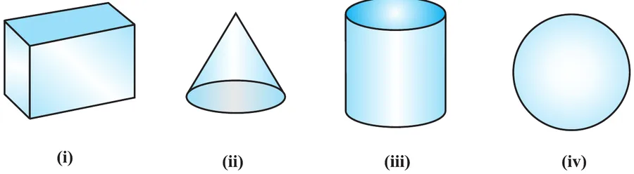
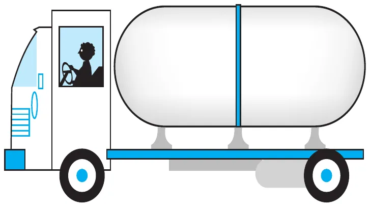
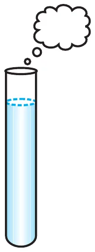
🤔 The whole chapter in one question
When two solids are joined, which surfaces can you still touch (surface area) and how much space is inside (volume)? Surface area needs care because some surfaces get hidden. Volume is easy: it just adds up (or subtracts, when something is scooped out).
Formula kit for the six basic solids
Learn these perfectly first. Every question in this chapter is built out of them. r = radius, h = height, l = slant height, a = edge.
Cuboid
LSA = 2h(l + b)
TSA = 2(lb + bh + hl)
V = l × b × h
Diagonal = √(l² + b² + h²)
Cube
LSA = 4a²
TSA = 6a²
V = a³
Diagonal = √3 a
Cylinder
CSA = 2πrh
TSA = 2πr(r + h)
V = πr²h
Cone
l = √(r² + h²)
CSA = πrl
TSA = πr(l + r)
V = ⅓πr²h
Sphere
SA = 4πr²
V = 4⁄3πr³
Only one surface: all of it is curved
Hemisphere
CSA = 2πr²
TSA = 3πr²
V = 2⁄3πr³
🧠 Memory hooks
- Hemisphere TSA = 3πr²: the curved bowl (2πr²) + the flat lid (πr²). This exact fact was asked in CBSE 2025 and 2026.
- Cone = ⅓ cylinder: a cone of the same r and h holds exactly one-third of the water a cylinder holds. Hemisphere = ⅔ of that cylinder (when h = r). So cone : hemisphere : cylinder = 1 : 2 : 3 (Archimedes’ favourite result).
- Slant height l only appears in the cone’s surface, never in its volume. Volume uses the vertical height h.
- Squares for area (cm²), cubes for volume (cm³). 1 litre = 1000 cm³, 1 m³ = 1000 litres.
| Use π = | When | Nice numbers |
|---|---|---|
| 22/7 | “Unless stated otherwise” in NCERT; radii like 7, 3.5, 14, 21, 0.7 | π × 7² = 154, π × 3.5² = 38.5, π × 14 = 44 |
| 3.14 | When the question says so (Examples 3, 6, 7; Ex 12.2 Q6, Q8) | 3.14 × 2.5² = 19.625 |
| leave as π | “in terms of π” (Ex 12.2 Q1) | keep 2π, ⅓π … till the end |
The glue rule: what to paint, what to pour
NCERT explains it with the tanker (Fig. 12.4): it is made of a cylinder with a hemisphere stuck on each end. Once glued, the two flat circles where they meet are inside the object. You cannot paint them.
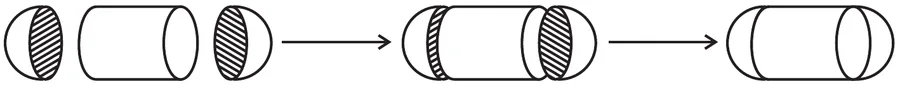
The same thing happens with the toy (top) made of a cone and a hemisphere (Fig. 12.5): bring the flat faces together, and both flat faces vanish.
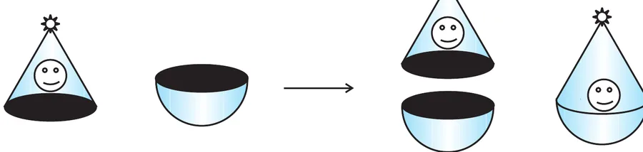
🎨 Paint = surface area add only the visible parts
Hidden faces (where solids touch) are not counted. A scooped hole adds its inner surface (you can paint inside the bowl) and removes the flat disc that was cut away.
💧 Pour = volume just add or subtract
Joined solids: V = V₁ + V₂. Scooped out / hollowed: V = V₁ − V₂. Nothing ever “hides” in volume.
⚠️ The number one mistake
TSA of a combined solid is not TSA₁ + TSA₂. NCERT says it directly after Example 1: “total surface area of the top is not the sum of the total surface areas of the cone and hemisphere.”
Three kinds of joins you will meet
| Type | Example | Surface area | Volume |
|---|---|---|---|
| Same-size join (radii equal) | Cone on hemisphere, capsule, tent | Both touching faces vanish completely | V₁ + V₂ |
| Unequal join | Hemisphere on a cube (Ex. 2), rocket (Ex. 3) | Bigger face loses only the part covered: a ring or a square with a hole is left | V₁ + V₂ |
| Scoop / cavity | Bird-bath (Ex. 4), Ex 12.1 Q5, Q8, Q9 | Remove the flat disc, add the inside curved surface | V₁ − V₂ |
Surface area of a combination of solids
Method: break the object into basic solids, mark the hidden faces, add the visible areas, and write the unit (cm²).
Example 1: Rasheed’s lattu (top)
A top is a cone surmounted on a hemisphere. Total height 5 cm, diameter 3.5 cm. Find the area to be coloured. (π = 22⁄7)
Visible parts: CSA of hemisphere + CSA of cone.
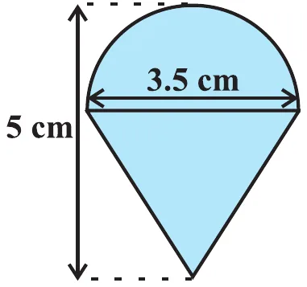
r = 1.75 cm. CSA of hemisphere = 2πr² = 2 × 227 × 1.75 × 1.75 = 19.25 cm²
Height of cone = 5 − 1.75 = 3.25 cm. Slant height l = √(1.75² + 3.25²) = √13.625 ≈ 3.7 cm
CSA of cone = πrl = 227 × 1.75 × 3.7 = 20.35 cm²
Area to colour = 19.25 + 20.35 ≈ 39.6 cm²
Shortcut used by NCERT: 227 × 3.52 × (3.5 + 3.7) = 112 × 7.2 = 39.6.
Example 2: Decorative block (cube + hemisphere)
A cube of edge 5 cm has a hemisphere of diameter 4.2 cm fixed on top. Find the total surface area.
Unequal join: the top face of the cube loses a circle (πr²), but the hemisphere adds its curved surface (2πr²).
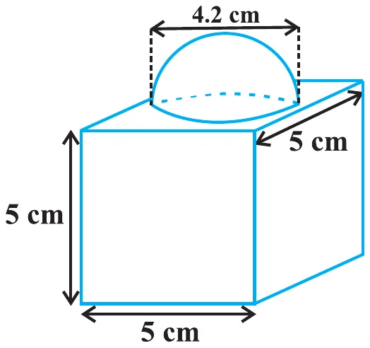
TSA of cube = 6 × 5² = 150 cm². r = 2.1 cm.
Surface area = 150 − πr² + 2πr² = 150 + πr² = 150 + 227 × 2.1 × 2.1 = 150 + 13.86
Surface area of block = 163.86 cm²
Net effect of sticking a hemisphere on a flat face: +πr². Remember this, it saves time.
Example 3: Wooden rocket (cone on a thinner cylinder)
Total height 26 cm, cone height 6 cm, cone base diameter 5 cm, cylinder diameter 3 cm. Cone painted orange, cylinder yellow. (π = 3.14)
r = 2.5, h = 6, r′ = 1.5, h′ = 20. l = √(2.5² + 6²) = 6.5 cm.
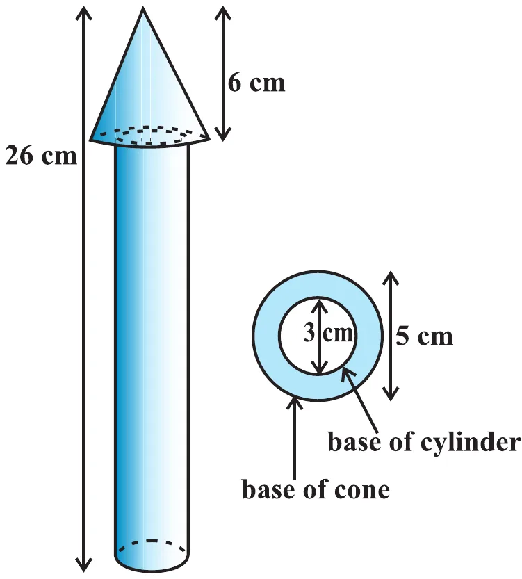
Orange = CSA of cone + ring under the cone = πrl + πr² − πr′² = π[(2.5 × 6.5) + 6.25 − 2.25] = 3.14 × 20.25 = 63.585 cm²
Yellow = CSA of cylinder + one base = 2πr′h′ + πr′² = πr′(2h′ + r′) = 3.14 × 1.5 × 41.5 = 195.465 cm²
Why the ring? The cone’s base (radius 2.5) is wider than the cylinder (radius 1.5). Only the middle circle of radius 1.5 is hidden. The outer ring is visible from below, so it is painted.
Example 4: Mayank’s bird-bath (scoop)
A cylinder (height 1.45 m, radius 30 cm) with a hemispherical depression at the top. Find the total surface area.
The top circle is scooped away and the inside bowl (2πr²) appears. NCERT counts the outer curved surface and the bowl.
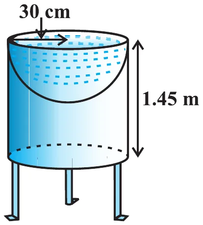
TSA = 2πrh + 2πr² = 2πr(h + r) = 2 × 227 × 30 × (145 + 30)
= 33000 cm² = 3.3 m²
Units! h = 1.45 m = 145 cm. Convert everything to one unit first. 1 m² = 10 000 cm².
3D Solid Builder
Pick a shape from the book, move the sliders, and switch between 🎨 Paint (surface area: the red dashed faces are hidden and not counted) and 💧 Pour (volume fills up). The full working updates as you slide, so you can check any answer.
Volume of a combination of solids
Surface area had to be careful because faces disappear. Volume does not: the volume of the joined solid is the sum of the volumes of its parts. If a part is removed, subtract it.
Example 5: Shanta’s shed (cuboid + half cylinder)
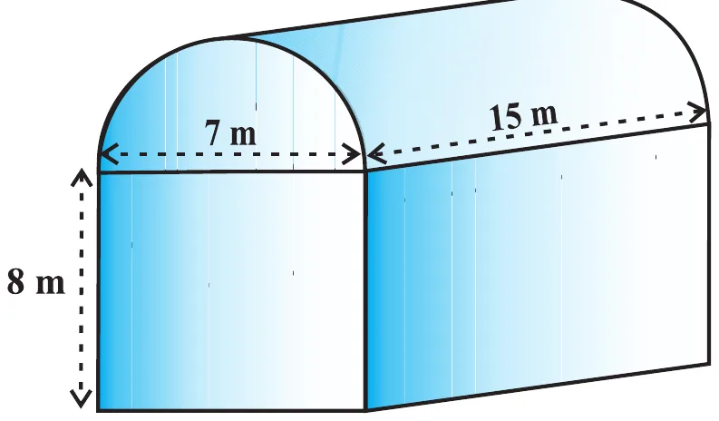
Volume of air = cuboid + ½ cylinder = 15 × 7 × 8 + ½ × 227 × 72 × 72 × 15 = 840 + 288.75 = 1128.75 m³
Machinery 300 m³, 20 workers × 0.08 m³ = 1.6 m³.
Air left = 1128.75 − (300 + 1.6) = 827.15 m³
The half cylinder lies on its side: its “height” is the length of the shed (15 m) and its radius is half the width (3.5 m).
Example 6: The juice seller’s trick glass
Glass: inner diameter 5 cm, height 10 cm, with a raised hemispherical bottom. Find the apparent and the actual capacity. (π = 3.14)
Apparent = πr²h = 3.14 × 2.5 × 2.5 × 10 = 196.25 cm³
Hemisphere = ⅔πr³ = ⅔ × 3.14 × 2.5³ = 32.71 cm³
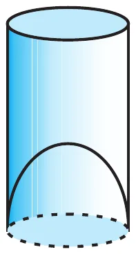
Actual capacity = 196.25 − 32.71 = 163.54 cm³
Real-life lesson: the customer pays for 196 cm³ but gets only 164 cm³, about 17% less.
Example 7: Toy inside a cylinder
A toy is a hemisphere surmounted by a cone. Cone height 2 cm, base diameter 4 cm. Find its volume, and the difference from a circumscribing cylinder. (π = 3.14)
r = 2 cm. V = ⅔πr³ + ⅓πr²h = ⅔ × 3.14 × 8 + ⅓ × 3.14 × 4 × 2 = 25.12 cm³
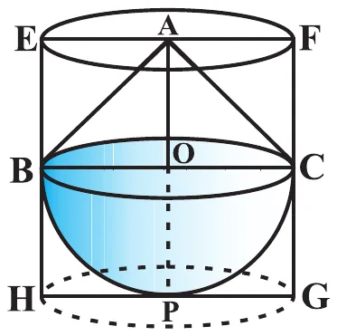
Cylinder: radius 2, height EH = AO + OP = 2 + 2 = 4. V = 3.14 × 4 × 4 = 50.24 cm³.
Difference = 50.24 − 25.12 = 25.12 cm³
✨ Not a coincidence!
Here h = r = 2. Cone = ⅓πr³, hemisphere = ⅔πr³, so the toy = πr³. The cylinder (height 2r) = 2πr³. So the toy fills exactly half the cylinder, for any r. That is why the two answers are equal.
Labs: lead shots and units
🔬 Lab 1: Drop the lead shots (Exercise 12.2, Q5)
An inverted cone (height 8 cm, radius 5 cm) is full of water. Each lead shot is a sphere of radius 0.5 cm. Drop shots in and watch the water that spills. How many until one-fourth of the water has flowed out?
📏 Lab 2: Unit converter
Half the marks lost in this chapter are lost to units. Type a value.
| Convert | Rule |
|---|---|
| m → cm | × 100 |
| m² → cm² | × 10 000 (100²) |
| m³ → cm³ | × 10 00 000 (100³) |
| 1 litre | = 1000 cm³ = 1000 mL |
| 1 m³ | = 1000 litres |
| mass | = volume × density (Ex 12.2 Q6: 8 g per cm³) |
Maths around Motihari (case-study practice)
Combined solids are everywhere around us. Try these “model” questions. (The numbers are simple made-up values for practice, not real measurements.)
🛕 Kesaria Stupa East Champaran
Model it as a cylinder (r = 21 m, h = 10 m) with a hemispherical dome. Volume = πr²h + ⅔πr³ = 227 × 441 × 10 + ⅔ × 227 × 9261 = 13 860 + 19 404 = 33 264 m³.
⛺ Mela tent cylinder + cone
r = 7 m, wall 3 m, slant 10 m. Canvas = 2πrh + πrl = 132 + 220 = 352 m². At ₹50 per m²: ₹17 600. No floor canvas!
🌾 Grain silo cylinder + cone roof
r = 3.5 m, h = 12 m, roof height 3 m. Storage = πr²h + ⅓πr²(3) = 462 + 38.5 = 500.5 m³, enough for about 375 tonnes of wheat at 750 kg/m³.
💊 Capsule Ex 12.1 Q6
Length 14 mm, diameter 5 mm: cylinder 9 mm long + a full sphere of radius 2.5 mm. Surface = 2πrh + 4πr² = 220 mm².
🍬 Gulab jamun Ex 12.2 Q3
45 jamuns, each a cylinder with hemispherical ends (5 cm × 2.8 cm). Syrup at 30% = about 338 cm³, a third of a litre.
🍦 Ice-cream cone CBSE 2023
Cone r = 3 cm, h = 12 cm, filled except the lower ⅙, with a hemisphere on top: 30π + 18π = 48π ≈ 150.72 cm³.
Common mistakes (and how to dodge them)
❌ Adding TSAs the classic
TSA(toy) ≠ TSA(cone) + TSA(hemisphere). Use only the visible curved parts.
❌ Slant height in the volume cone
V = ⅓πr²h uses vertical height. l is only for the curved surface.
❌ Wrong cone height Ex 1, Q3
If the total height is given, subtract the hemisphere’s radius: cone height = total − r.
❌ Capsule length Ex 12.1 Q6
Cylinder part = total length − 2r (both ends are hemispheres).
❌ Diameter used as radius everywhere
Underline the word “diameter” and halve it at once.
❌ Forgetting the extra surface of a scoop Q5, Q8, Q9
A hole removes a flat face and adds an inside curved surface. Net for a hemisphere scoop: −πr² + 2πr² = +πr².
❌ Mixing units Ex 4
1.45 m and 30 cm in the same formula? Convert first.
❌ Tent floor Ex 12.1 Q7
“Base not covered with canvas”: do not add πr².
Mind map and the 4-step method
- 1. Break: name the basic solids and write r, h, l for each
- 2. Mark: which faces are hidden, which are added by a scoop?
- 3. Add or subtract: areas of visible parts, or volumes
- 4. Unit and π: right π, cm² or cm³, round as asked
Shape Arcade: 4 games
Play to learn. Every game gives you ⭐ stars, saved on this phone. Collect all 20 to become a Solid Champion.
🔍 Game 1: Hidden-face hunter
Look at the solid. Tap every surface that must be counted in its total surface area, then press Check. 6 rounds.
🃏 Game 2: Formula memory
Flip two cards at a time. Match each quantity with its formula. Fewer moves, more stars.
⏱️ Game 3: Speed round (π = 22/7)
60 seconds. Answer as many as you can. Every answer is a whole number if you cancel the 7 first.
🕵️ Game 4: Error detective
Each solution has one wrong line. Tap it. 5 cases.
CBSE previous year board questions
Questions on this chapter from CBSE Class 10 Mathematics (Standard) board papers 2023 to 2026, with solutions written the way the CBSE marking scheme awards marks. Step marks are shown as ½ 1. Wording is lightly shortened; data and options are as in the paper. Filter by year.
2026 · 30/1/1 · Q16 · 1 markThe total surface area of a solid hemisphere of diameter 2d is: (a) 3πd² (b) 2πd² (c) ½πd² (d) ¾πd²
2026 · 30/3/1 · Q7 · 1 markA cone of maximum size is carved out from a solid cube of edge l. The volume of the cone is: (a) πl³/12 (b) πl³/3 (c) l³(1 − π/3) (d) πl³/8
2026 · 30/3/1 · Q25 · 2 marksA toy is in the form of a cone mounted on a hemisphere of common base radius 7 cm. The total height of the toy is 31 cm. Find the total surface area of the toy. (π = 22/7)
Height of cone h = 31 − 7 = 24 cm, slant height l = √(7² + 24²) = 25 cm ½
TSA = CSA of cone + CSA of hemisphere = πrl + 2πr² ½
= 227 × 7 × 25 + 2 × 227 × 7 × 7 = 550 + 308 ½
TSA = 858 cm² ½
2026 · 30/1/1 · Q30 · 3 marksA solid is in the shape of a cylinder with two hemispherical ends. The total height of the solid is 20 cm and the diameter of the cylinder is 7 cm. Find the total volume of the solid. (π = 22/7)
r = 3.5 cm. Height of cylinder = 20 − 3.5 − 3.5 = 13 cm 1
V = πr²h + 2 × ⅔πr³ = πr²(h + ⁴⁄₃r) 1
= 227 × 72 × 72 × (13 + 143) = 772 × 533 = 40816
V ≈ 680.17 cm³ 1
2025 · 30/1/1 · Q20 · 1 mark (A–R)Assertion (A): If we join two hemispheres of the same radius along their bases, we get a sphere. Reason (R): Total surface area of a sphere of radius r is 3πr². (A) Both true, R explains A (B) Both true, R does not explain A (C) A true, R false (D) A false, R true
2025 · 30/1/1 · Q30 · 3 marksA room is in the form of a cylinder surmounted by a hemispherical dome. The base radius of the hemisphere is half the height of the cylindrical part. If the room contains 140821 m³ of air, find the height of the cylindrical part. (π = 22/7)
Let the radius be r. Then cylinder height h = 2r. ½
V = πr²h + ⅔πr³ = 2πr³ + ⅔πr³ = 83πr³ 1
83 × 227 × r³ = 140821 ⇒ r³ = 8 ⇒ r = 2 m 1
Height of cylinder = 2r = 4 m ½
CBSE 2023 asked the same room and wanted the total height: 4 + 2 = 6 m. Read which height is asked!
2025 · 30/1/2 · Q26 · 3 marksThe radii of the bases of a cylinder and a cone are in the ratio 3 : 4 and their heights are in the ratio 2 : 3. Find the ratio of their volumes.
r₁ : r₂ = 3 : 4, h₁ : h₂ = 2 : 3. ½
V(cylinder)V(cone) = πr₁²h₁⅓πr₂²h₂ = 3 × (r₁r₂)² × h₁h₂ 1
= 3 × 916 × 23 = 98 1
Ratio of volumes = 9 : 8 ½
Trap: don’t forget the ⅓ of the cone. Without it you would get 3 : 8.
2024 · 30/1/1 · Q13 · 1 markA solid sphere is cut into two hemispheres. The ratio of the surface area of the sphere to the total surface area of the two hemispheres is: (a) 1 : 1 (b) 1 : 4 (c) 2 : 3 (d) 3 : 2
2024 · 30/1/1 · Q15 · 1 markThe volume of the largest right circular cone that can be carved out from a solid cube of edge 2 cm is: (a) 4π/3 cu cm (b) 5π/3 cu cm (c) 8π/3 cu cm (d) 2π/3 cu cm
2024 · 30/1/1 · Q31 · 3 marksThe difference between the outer and inner radii of a hollow right circular cylinder of length 14 cm is 1 cm. If the volume of metal used in making the cylinder is 176 cm³, find the outer and inner radii. (π = 22/7)
Let the radii be R and r, with R − r = 1. ½
Volume of metal = πR²h − πr²h = πh(R² − r²) = 227 × 14 × (R − r)(R + r) = 176 1
44(R + r) = 176 ⇒ R + r = 4. ½ With R − r = 1: 2R = 5.
Outer radius 2.5 cm, inner radius 1.5 cm 1
2023 · 30/1/1 · Q10 · 1 markThe curved surface area of a cylinder of height 5 cm is 94.2 cm². Its radius is (π = 3.14): (A) 2 cm (B) 3 cm (C) 2.9 cm (D) 6 cm
2023 · 30/1/1 · Q12 · 1 markThe curved surface area of a cone of height 24 cm and radius 7 cm is: (A) 528 cm² (B) 1056 cm² (C) 550 cm² (D) 500 cm²
2023 · 30/1/1 · Q31(a) · 3 marksA room is in the form of a cylinder surmounted by a hemispherical dome. The base radius of the hemisphere is half the height of the cylindrical part. Find the total height of the room if it contains 140821 m³ of air. (π = 22/7)
Let r = radius, so cylinder height = 2r. V = 2πr³ + ⅔πr³ = 83πr³ 1
83 × 227 × r³ = 140821 ⇒ r³ = 8 ⇒ r = 2 m 1
Total height = 2r + r = 4 + 2 = 6 m 1
2023 · 30/1/1 · Q31(b) · 3 marksOR: An empty cone of radius 3 cm and height 12 cm is filled with ice-cream so that the lower ⅙ of its volume is empty, and a hemisphere of ice-cream is formed on top. Find the volume of the ice-cream. (π = 3.14)
Cone = ⅓π(3²)(12) = 36π cm³ ½. Ice-cream in cone = ⅚ × 36π = 30π cm³ 1
Hemisphere on top (r = 3) = ⅔π(27) = 18π cm³ 1
Ice-cream = 30π + 18π = 48π = 150.72 cm³ ½
📈 Pattern spotted
The same ideas repeat: the dome room came in 2023 and again in 2025, the largest cone in a cube in 2024 and again in 2026, and the cone-on-hemisphere toy is Ex 12.1 Q3 with new numbers. Master the NCERT exercise and you have seen most of the paper.
CBSE section-wise practice
Questions in the exact format of the CBSE paper, from Section A to Section E, with step marks.
Section A: MCQs (1 mark each)
A1A cone and a cylinder have the same base and the same height. The ratio of their volumes is (a) 1 : 2 (b) 1 : 3 (c) 2 : 3 (d) 3 : 1
A2A solid hemisphere of radius 7 cm is fixed on a face of a cube of edge 14 cm. The increase in the surface area of the cube is (a) 154 cm² (b) 308 cm² (c) 462 cm² (d) 0
A3Two cubes of edge 5 cm are joined end to end. The surface area of the cuboid formed is (a) 300 cm² (b) 250 cm² (c) 200 cm² (d) 150 cm²
A4If the radius of a sphere is halved, its volume becomes (a) ½ (b) ¼ (c) ⅛ (d) 2 times
A5A cylinder, a cone and a hemisphere have equal bases and equal heights. The ratio of their volumes is (a) 3 : 1 : 2 (b) 1 : 2 : 3 (c) 2 : 1 : 3 (d) 3 : 2 : 1
A6The largest sphere is carved out of a cube of edge 7 cm. Its volume is (a) 179.67 cm³ (b) 1437.33 cm³ (c) 343 cm³ (d) 89.83 cm³
Section A: Assertion–Reason (1 mark each)
(a) Both true, R explains A. (b) Both true, R does not explain A. (c) A true, R false. (d) A false, R true.
AR1A: The total surface area of a toy made of a cone on a hemisphere is πrl + 2πr². R: When two solids are joined, the surface area of the new solid is the sum of their total surface areas.
AR2A: The volume of a capsule (cylinder with hemispherical ends) is πr²h + ⁴⁄₃πr³. R: Two equal hemispheres together make a sphere.
AR3A: If a cone of radius r and height h is hollowed out of a cylinder of the same r and h, the remaining volume is ⅔πr²h. R: The volume of a cone is one-third of the cylinder with the same base and height.
Section B: Very short answer (2 marks each)
B1Two cubes each of edge 6 cm are joined end to end. Find the surface area of the resulting cuboid.
Cuboid: l = 12, b = 6, h = 6 cm ½
SA = 2(lb + bh + hl) = 2(72 + 36 + 72) 1
= 360 cm² ½
B2A solid is a cylinder of radius 3 cm and height 6 cm with a hemisphere of the same radius on top. Find its volume. (π = 3.14)
V = πr²h + ⅔πr³ = π(9)(6) + ⅔π(27) 1
= 54π + 18π = 72π ½
= 226.08 cm³ ½
B3A cubical block of side 10 cm is surmounted by a hemisphere of the greatest possible diameter. Find the surface area of the solid. (π = 3.14)
r = 5 cm. SA = 6a² − πr² + 2πr² = 6a² + πr² 1
= 600 + 3.14 × 25 = 600 + 78.5 ½
= 678.5 cm² ½
Section C: Short answer (3 marks each)
C1An ice-cream cone has a hemispherical top. The height of the cone is 9 cm and the radius of its base is 2.5 cm. Find the volume of ice-cream (cone completely filled). (π = 22/7)
V = ⅓πr²h + ⅔πr³ = ⅓πr²(h + 2r) 1
= ⅓ × 227 × 6.25 × (9 + 5) = ⅓ × 227 × 6.25 × 14 1
= 2753 ≈ 91.67 cm³ 1
C2A tent is a cylinder of radius 7 m and height 3 m surmounted by a cone of slant height 10 m. Find the canvas needed (no floor) and its cost at ₹50 per m². (π = 22/7)
Canvas = CSA of cylinder + CSA of cone = 2πrh + πrl 1
= 2 × 227 × 7 × 3 + 227 × 7 × 10 = 132 + 220 = 352 m² 1
Cost = 352 × 50 = ₹17 600 1
C3From a solid cylinder of height 14 cm and base diameter 7 cm, two equal conical holes, each of radius 2.1 cm and height 4 cm, are cut off (one from each end). Find the volume of the remaining solid. (π = 22/7)
Cylinder = 227 × 3.5² × 14 = 539 cm³ 1
Two cones = 2 × ⅓ × 227 × 2.1² × 4 = 36.96 cm³ 1
Remaining = 539 − 36.96 = 502.04 cm³ 1
Section D: Long answer (5 marks each)
D1A solid toy is a hemisphere surmounted by a right circular cone of height 4 cm and base diameter 8 cm. Find (i) the volume of the toy, (ii) the volume of the circumscribing cylinder, (iii) the space between them, (iv) the surface area of the toy. (π = 3.14)
r = 4, cone h = 4, l = √32 = 4√2 ≈ 5.657.
(i) Toy = ⅓πr²h + ⅔πr³ = 64π3 + 128π3 = 64π = 200.96 cm³ 1½
(ii) Cylinder: radius 4, height 4 + 4 = 8: π × 16 × 8 = 128π = 401.92 cm³ 1
(iii) 128π − 64π = 64π = 200.96 cm³ 1
(iv) πrl + 2πr² = 3.14 × (22.63 + 32) = 171.53 cm² 1½
D2A solid toy is a cylinder of radius 3.5 cm and height 10 cm, with a hemisphere at one end and a cone of height 12 cm at the other. Find the volume and the total surface area of the toy. (π = 22/7)
r = 3.5, cylinder h = 10, cone h′ = 12, l = √(3.5² + 12²) = √156.25 = 12.5 cm ½
Volume = πr²h + ⅓πr²h′ + ⅔πr³ = πr²(h + h′3 + 2r3) 1
= 227 × 12.25 × (10 + 4 + 73) = 38.5 × 493 = 628.83 cm³ 1
TSA = 2πrh + πrl + 2πr² = πr(2h + l + 2r) 1
= 227 × 3.5 × (20 + 12.5 + 7) = 11 × 39.5 = 434.5 cm² 1½
Section E: Case-based (4 marks each)
E1School water tank: a cylinder of radius 1.4 m and height 2 m with a hemispherical bottom of the same radius. (i) Find the volume of the cylindrical part. (1) (ii) Find the volume of the hemispherical part. (1) (iii) How many litres can the tank hold? (2) OR (iii) Find the outer surface area of the tank to be painted (top closed). (2) (π = 22/7)
(i) πr²h = 227 × 1.96 × 2 = 12.32 m³
(ii) ⅔πr³ = ⅔ × 227 × 2.744 = 5.749 m³ (≈ 5.75)
(iii) 12.32 + 5.749 = 18.069 m³ = 18 069 litres (approx.)
OR paint = top πr² + side 2πrh + bowl 2πr² = 6.16 + 17.6 + 12.32 = 36.08 m²
E2Medicine capsules: each capsule is a cylinder with two hemispherical ends, total length 14 mm and diameter 5 mm. (i) What is the length of the cylindrical part? (1) (ii) Find the surface area of one capsule. (1) (iii) Find the volume of medicine in one capsule. (2) OR (iii) Find the volume of medicine in a strip of 10 capsules, in cm³. (2) (π = 22/7)
(i) 14 − 2 × 2.5 = 9 mm
(ii) 2πrh + 4πr² = 2πr(h + 2r) = 2 × 227 × 2.5 × 14 = 220 mm²
(iii) πr²h + ⁴⁄₃πr³ = πr²(h + ⁴⁄₃r) = 227 × 6.25 × (9 + 103) = 227 × 6.25 × 373 ≈ 242.26 mm³
OR 10 × 242.26 = 2422.6 mm³ = 2.42 cm³ (1 cm³ = 1000 mm³)
Summary (NCERT 12.4)
- To find the surface area of an object formed by combining any two of the basic solids (cuboid, cone, cylinder, sphere, hemisphere), add the areas of the surfaces that stay visible.
- To find the volume of objects formed by combining any two of these solids, add (or subtract) the volumes of the parts.
Test yourself
15 quick questions. Tap an answer to see if it is right. Score: 0 / 15
1. TSA of a solid hemisphere of radius r is
Curved 2πr² + flat πr².
2. A toy is a cone on a hemisphere (same r). Its surface area is
Only the two curved surfaces are visible.
3. Slant height of a cone with r = 6 cm, h = 8 cm
√(36 + 64) = 10.
4. Two cubes of volume 27 cm³ each are joined end to end. Surface area of the cuboid?
Edge 3: 6 × 3 × 3: 2(18 + 9 + 18) = 90.
5. Volume of a capsule (r, cylinder length h) is
Two hemispheres = one sphere.
6. A cone is hollowed out of a cylinder of the same r and h. Remaining volume:
1 − ⅓ = ⅔.
7. A hemisphere of radius 3.5 cm is scooped out of a face of a cube. Change in surface area:
−πr² + 2πr² = +πr² = 38.5.
8. Number of lead shots in Ex 12.2 Q5 (cone 8 cm × 5 cm, shot radius 0.5 cm, ¼ water out):
(50π/3) ÷ (π/6) = 100.
9. 1 m³ =
1 m³ = 10⁶ cm³ = 1000 × 1000 cm³.
10. Greatest diameter of a hemisphere on a cube of side 7 cm:
It must sit on a face of side 7.
11. Tent canvas (no floor) for cylinder radius r, height h with cone of slant l:
Floor and the hidden joint are not covered.
12. A cylinder and a cone have the same r and h. Their volumes are in the ratio
Cylinder is three cones.
13. If the radius of a sphere is doubled, its surface area becomes
Area ∝ r².
14. In Example 3 (rocket), why is a ring painted orange?
Only a circle of radius 1.5 is hidden; the ring from 1.5 to 2.5 shows.
15. Which of these does NOT use slant height?
V = ⅓πr²h.
Answers to all 17 exercise questions
Exercise 12.1 (π = 22/7 unless stated)
1.2 cubes each of volume 64 cm³ are joined end to end. Find the surface area of the resulting cuboid.
a³ = 64 ⇒ a = 4 cm. Cuboid: l = 8, b = 4, h = 4.
SA = 2(lb + bh + hl) = 2(32 + 16 + 32)
= 160 cm²
Check: 2 × 96 − 2 × 16 (two hidden faces) = 160 ✓
2.A vessel is a hollow hemisphere mounted by a hollow cylinder. Diameter of hemisphere 14 cm, total height 13 cm. Find the inner surface area.
r = 7 cm, cylinder height = 13 − 7 = 6 cm.
Inner SA = 2πr² + 2πrh = 2πr(r + h) = 2 × 227 × 7 × 13
= 572 cm²
3.A toy is a cone of radius 3.5 cm mounted on a hemisphere of the same radius. Total height 15.5 cm. Find the TSA of the toy.
Cone height = 15.5 − 3.5 = 12 cm. l = √(12² + 3.5²) = √156.25 = 12.5 cm.
TSA = πrl + 2πr² = πr(l + 2r) = 227 × 3.5 × (12.5 + 7) = 11 × 19.5
= 214.5 cm²
4.A cubical block of side 7 cm is surmounted by a hemisphere. What is the greatest diameter the hemisphere can have? Find the surface area of the solid.
Greatest diameter = side of cube = 7 cm, so r = 3.5 cm.
SA = 6a² − πr² + 2πr² = 6a² + πr² = 294 + 227 × 12.25 = 294 + 38.5
= 332.5 cm²
5.A hemispherical depression is cut out from one face of a cubical wooden block such that the diameter l of the hemisphere equals the edge of the cube. Find the surface area of the remaining solid.
Edge = l, r = l2.
SA = 6l² − πr² + 2πr² = 6l² + πr² = 6l² + πl²4
= l²4(24 + π) square units
6.A medicine capsule is a cylinder with two hemispheres stuck to its ends. Length 14 mm, diameter 5 mm. Find its surface area.
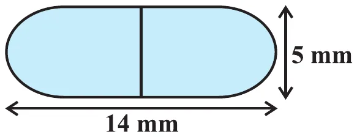
r = 2.5 mm, cylinder length = 14 − 5 = 9 mm.
SA = 2πrh + 4πr² = 2πr(h + 2r) = 2 × 227 × 2.5 × 14
= 220 mm²
7.A tent is a cylinder (height 2.1 m, diameter 4 m) surmounted by a conical top of slant height 2.8 m. Find the canvas used and its cost at ₹500 per m². (Base not covered.)
r = 2 m. Canvas = 2πrh + πrl = πr(2h + l) = 227 × 2 × (4.2 + 2.8) = 227 × 2 × 7
= 44 m², cost = 44 × 500 = ₹22 000
8.From a solid cylinder (height 2.4 cm, diameter 1.4 cm) a conical cavity of the same height and diameter is hollowed out. Find the TSA of the remaining solid to the nearest cm².
r = 0.7, h = 2.4, l = √(0.49 + 5.76) = 2.5 cm.
Visible: curved side 2πrh + bottom base πr² + inside cone πrl (the top disc is gone).
TSA = πr(2h + r + l) = 227 × 0.7 × (4.8 + 0.7 + 2.5) = 2.2 × 8 = 17.6
≈ 18 cm²
9.A wooden article is made by scooping out a hemisphere from each end of a solid cylinder (height 10 cm, radius 3.5 cm). Find its TSA.
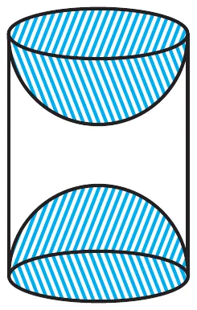
TSA = 2πrh + 2 × 2πr² = 2πr(h + 2r) = 2 × 227 × 3.5 × 17 = 22 × 17
= 374 cm²
Exercise 12.2 (π = 22/7 unless stated)
1.A solid is a cone standing on a hemisphere, both radii 1 cm, cone height = radius. Find the volume in terms of π.
V = ⅓πr²h + ⅔πr³ = ⅓π + ⅔π
= π cm³
2.Rachel’s model: a cylinder with two cones at its ends. Diameter 3 cm, length 12 cm, each cone 2 cm high. Find the volume of air inside.
r = 1.5, cylinder length = 12 − 2 − 2 = 8 cm.
V = πr²(8) + 2 × ⅓πr²(2) = πr²(8 + 43) = 227 × 2.25 × 283
= 66 cm³
3.A gulab jamun has syrup up to 30% of its volume. Find the syrup in 45 gulab jamuns, each a cylinder with hemispherical ends, length 5 cm, diameter 2.8 cm.
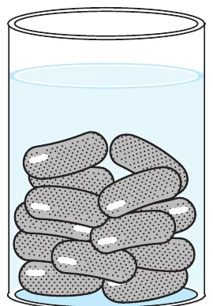
r = 1.4, cylinder length = 5 − 2.8 = 2.2 cm.
One = πr²h + ⁴⁄₃πr³ = 227 × 1.96 × (2.2 + 1.867) = 6.16 × 4.067 ≈ 25.05 cm³
45 jamuns ≈ 1127.28 cm³; 30% of that =
≈ 338 cm³
4.A wooden pen stand is a cuboid 15 cm × 10 cm × 3.5 cm with four conical depressions (radius 0.5 cm, depth 1.4 cm). Find the volume of wood.
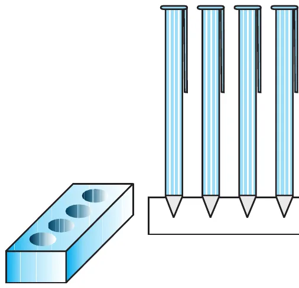
Cuboid = 15 × 10 × 3.5 = 525 cm³.
4 cones = 4 × ⅓ × 227 × 0.25 × 1.4 = 4 × 0.367 = 1.467 cm³.
Wood = 525 − 1.47 = 523.53 cm³
5.An inverted cone (height 8 cm, top radius 5 cm) is full of water. Lead shots (spheres of radius 0.5 cm) are dropped in until one-fourth of the water flows out. How many shots?
Water = ⅓π × 25 × 8 = 200π3 cm³. Overflow = ¼ of it = 50π3 cm³.
One shot = ⁴⁄₃π(0.5)³ = π6 cm³.
n = 50π3 ÷ π6 = 100 shots
Try it in Lab 1.
6.A solid iron pole: cylinder of height 220 cm, base diameter 24 cm, surmounted by a cylinder of height 60 cm, radius 8 cm. Mass, if 1 cm³ of iron ≈ 8 g. (π = 3.14)
V = π(12²)(220) + π(8²)(60) = π(31680 + 3840) = 35520π = 111 532.8 cm³
Mass = 111 532.8 × 8 g = 892 262.4 g ≈ 892.26 kg
7.A solid (cone of height 120 cm, radius 60 cm on a hemisphere of radius 60 cm) is placed upright in a cylinder full of water (radius 60 cm, height 180 cm). Find the water left.
Cone = ⅓π(3600)(120) = 144 000π. Hemisphere = ⅔π(216 000) = 144 000π. Solid = 288 000π.
Cylinder = π(3600)(180) = 648 000π.
Water left = 360 000π = 360 000 × 227 ≈ 1 131 428.57 cm³
≈ 1.131 m³
8.A spherical glass vessel (diameter 8.5 cm) has a cylindrical neck 8 cm long, 2 cm in diameter. A child finds its volume to be 345 cm³. Is she correct? (π = 3.14)
Sphere: r = 4.25: ⁴⁄₃ × 3.14 × 76.77 ≈ 321.39 cm³. Neck: 3.14 × 1² × 8 = 25.12 cm³.
Total ≈ 346.51 cm³, so she is not correct; it is 346.51 cm³.